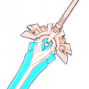
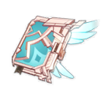

Wolf's Gravestone
|
Claymore |
5

|
46 |
ATK |
Wolfish
Tracker |
Increases ATK
by 20/25/30/35/40%.
On hit, attacks against enemies
with less than 30% HP increase all
party members' Base ATK
by 40/50/60/70/80% for 12s.
Can only occur once every 30s. |
Gacha |

Skyward Pride
|
Claymore |
5
|
48 |
Energy Recharge |
Sky-Ripping
Dragon Spine |
CRIT Rate increased by 4/5/6/7/8%. Gains Skypiercing Might upon using an Elemental Burst:
Increases Movement SPD by 10%, increases ATK SPD by 10%, and increases the DMG of Normal and Charged Attack hits by 20/25/30/35/40% for 12s. |
Gacha |

Amos' Bow
|
Bow |
5
|
46 |
ATK |
Strong-Willed |
Increases Normal Attack and Aimed Shot DMG by 12/15/18/21/24%. Increases DMG from arrows shot by a further 8/10/12/14/16% for every 0.1s that the arrow is in flight, up to 0.5s. Stacks up to 5 times on each arrow. |
Gacha |

Skyward Harp
|
Bow |
5
|
48 |
Crit Rate |
Echoing Ballad |
Increases CRIT DMG by 20/25/30/35/40%. Hits have a 60/70/80/90/100% chance to inflict a small AoE attack, dealing 125% Physical ATK DMG. Can only occur once every 4/3.5/3/2.5/2s. |
Gacha |

The Flute
|
Sword |
4
|
48 |
Energy Recharge |
Sky Piercing
Fang |
CRIT Rate increased by 4/5/6/7/8%. Gains Skypiercing Might upon using an Elemental Burst:
Increases Movement SPD by 10%, increases ATK SPD by 10%, and increases the DMG of Normal and Charged Attack hits by 20/25/30/35/40% for 12s. |
Gacha |

Skyward Atlas
|
Catalyst |
5
|
44 |
ATK |
Wandering Clouds |
Increases Elemental DMG Bonus by 12/15/18/21/24%. Normal Attack hits have a 50% chance to earn the favor of the clouds. which actively seek out nearby enemies to attack for 15s, dealing 160/200/240/280/320% ATK DMG. Can only occur once every 30s. |
Gacha |